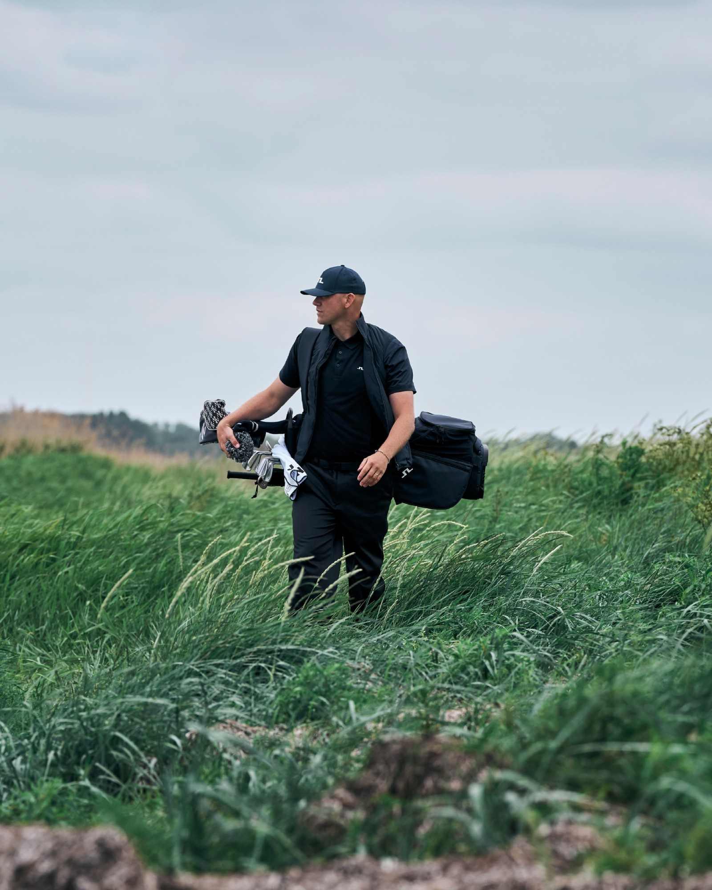
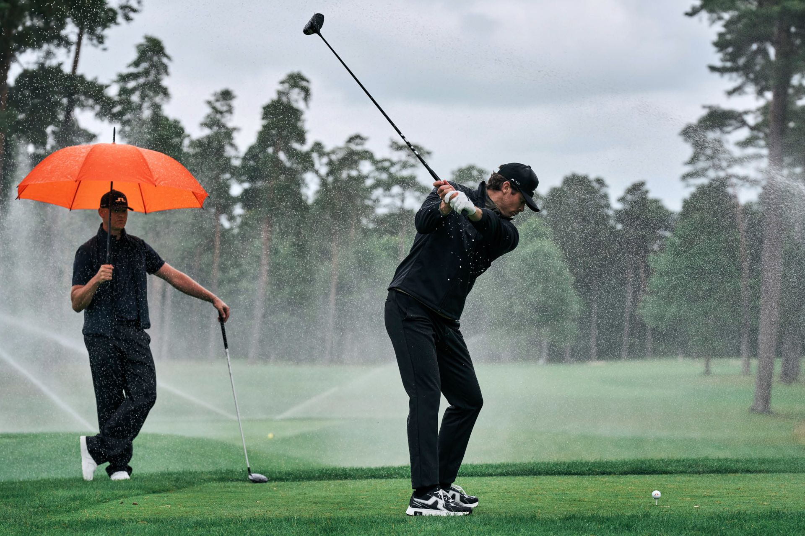

FW26 Golf Campaign – J.LINDEBERG
Site inprogress
J.LINDEBERG’s FW26 golf campaign. Titled Weather Wear, the concept plays on something every golfer knows: out on the course, you have to endure whatever the weather throws at you – changing, unpredictable and rarely on your side.
I created the concept and led the art direction from initial idea and on-set direction through to final delivery and roll-out, and directed the campaign films.
- Client
- J.LINDEBERG
- Year
- 2026
- Role
- Concept, art direction & film direction


